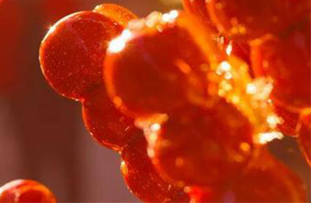
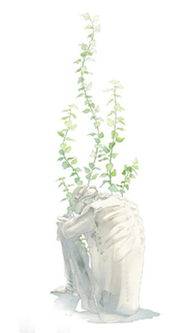

卷 首 语
perface
当我们谈论方言时，我们在谈论什么？
你的视线扫过这句话，这时也许你想到了一溜武汉重庆温州广东东北北京之类的地名；或许你已经联想到“猴赛雷”、“个斑马”、”胡建人“之类数之不尽的方言梗；甚至你还记起来几个相声小品，温习了一堆吐槽段子……是的，这些都反映了方言；但在此之外，方言还拥有更宏大的定义。
《旧约·创世纪》里说耶和华“变乱天下人的言语，使众人分散在全地上“，以此阻止了人们建造通天塔的计划。但耶和华也许意想不到的是，在这之后漫长的2000多年之中，人类自己反而有意无意的把语言彻底搞得一塌糊涂。区别于上面提到的地域方言，我们将职业、社会地位、政治立场、宗教信仰、受教育程度等因素所形成的语言差异称为社会方言。社会方言的存在导致现在任何人之间都存在着一揽子交流障碍，进行一次不产生误解的交流大概比在华中科技大学找到一个全是女同学的自习室简单一丁点。
而在信息爆炸的当下，语言的异化达到了一个高峰（比耶和华高到不知哪里去）。古中国的读书人主要接触的不过是四书五经之流；相对的，人们如今面对的是庞杂、过剩的信息流，几乎不可能接收到相同的信息，也许你和你的室友原本十分相似且亲密无间，但是在她偷偷观赏了一个普通的视频（例如av10492）以后，她就掌握了一种你不了解的社会方言，导致你们之间出现了一条鸿沟，我们也可以说，在你们之间，有一座巴别塔刚刚倒下。
目录
卷首语
- 跟我走吧---------袁梦飞
- 树魂---------刘璐
- 吆喝---------张京阳
常规
- 解剖--------刘璐
- 这时的爱荒凉-----金雨莎
- 妆台回梦
手绘
摄影
文编:袁梦飞 刘璐 张京阳 金雨莎 成龙 朱锦辉
美编:刘骏宏 许雨婷 许逸菲 吴萌 王益谦
手绘:周乐兮 汪雪薇
摄影:严瑶 冷威
责编:张文慧 熊紫珺 陈晨 尹孟钰 华雪瑶 赵月 廖芮 冷威 毕玉 冉文静 韩若思
今天我又见到了他。
他依然抱着那把又脏又旧的木吉他，微眯着眼睛，正倚在电影院门口的石狮子上唱着一首我叫不出名字的歌。或许是因为嗓音太沙哑，歌词我一句都没有听清，可是那首歌的调子却像一只捏住我喉咙的手，我想为他叫好，却发不出声音。偶尔有路人往他摆在地上的那只破了好几个洞的帽子里丢上几个硬币或是皱巴巴的票子，他看也不看，只是盯着离自己最近的那盏路灯，出神一般的完成这一场孤独的表演。我朝他走过去，突然听清了他正在唱的这首歌里的一句词儿：“我一克，要克好多年，漂亮嘞小姑娘些嘞，都不在我边边喽嘞。”
“就算则日子过些再唱安逸，我也找不到人来讲喽。”我也靠在石狮子上，跟着他一起唱完了这首歌的最后一句。他没有停下，只是一边拨动着弦，一边问我：“贵州人？”带着属于老北京的腔调他不唱歌时候的声音像是筛去了粗糙石砾的细沙，被风一吹，迷住我的耳朵。
我点点头，答道：“你北京来的？贵州话说的挺有样子。”他听完只是笑，深深浅浅的皱纹攀上了眼角。下一首歌的前奏已经起了，我索性盘腿坐下，帮他数着破帽子里的钱。
“如果你问我，浪漫是啥子，我会煮碗燃面给你。”他唱。
一曲歌毕。“这是哪里的话？”我抬起头问他。
“四川话，是四川一个叫宜宾的地儿。”天色暗下来，他收起吉他，捡起地上的破帽子，将里面的钱抓在一只手里，塞进了裤子的口袋。他点燃一根烟，烟草的味道混合着夜晚潮湿的风，暖和了我周身的空气。
他给我讲了一个我从来没有听过的故事，这句话是废话，他的故事，我怎么可能听过。
在几乎所有的流浪歌手都选择北漂的时候，从小生活在老北京胡同里的他，背上吉他，开始了南下的流浪。他说他路过西安，在一见到他就问他“吃咧么”的大娘的摊子边弹着吉他；他走过上海，年轻小伙子对着心仪的姑娘表白“我欢喜侬”，他为他们唱了一首情歌；他来到广州，穿着人字拖的男人冲着电话那头讲“内今晚得唔得空闲”，他在路边提供一段又一段背景音乐……
他说，他感受过每个城市的脉搏，嗅到过每个城市独特的味道，听见了每个城市不同的旋律。他学会了用几十种不同的方言，唱，我爱你。
他看着我，眼睛里倒映着城市明亮又虚幻的灯光，他笑了，他说了一句话，带着北京胡同里糖人儿的甜味儿。
“姑娘，跟我走吧。”
树是有魂的，每一片叶都散发着灵魂的味道。
最喜欢的，还是月下的槐。最好是如白霜般飘落一地的月光，清冷却温润，似恋人的唇，不允许一丝墨迹亵渎。它就默默地立在那里，一声不吭。入耳的只有冷冽的秋风和簌簌抖动的叶声。
陷入树林，静静仰头看着，仿佛进入了另一个世界，一个树的国度。稀稀疏疏的光下，深邃的寂静笼罩了整个林子，却像是听得到树的骨骼闷闷的作响。夜渐隐了本来的面目，温顺地倚在枝上，发出均匀的鼻息。又是一棵有气场的树——我心里禁不住笑起来。伸手抚摸它颇有质地的外衣，坑坑洼洼的很是粗糙，却带有一丝温湿的暖意；它挚恳地隐藏的过去一下显露了出：冬去春来，一层叠一层的外衣——深夜的寒，严冬的雪它该是都不怕的吧。时间磨砺出的深邃和坚毅刻在身上，内心却是越来越柔软。
顺着树干向上，看到重重叠叠的枝叶交错着私语。黑夜变魔术般的遮掩起一切光芒，却抵不住树如乙醚般挥发的味息。不禁想起清晨浓烈的阳光，渗过密密的枝叶直打到地上，叶子顿时如钻石般耀眼，让人久久不敢直视；虹膜映出彩虹般的光，就像冒泡的汤咕嘟咕嘟地奏响。
“刚出炉的新鲜阳光吆——来一斤？”
树仍然不语，枝头写满骄傲。
近乎放纵的不羁，肆意地在枝上飞舞。张扬着，疯狂盘曲的细枝，狂放炽热——几乎滥用的强烈抒情，树身浓的要溢出的哥特味儿散发出摄人心脾的美丽，它随风大声呼喊：自由呵——自由！心里的热浪汹涌起来，哪怕是在黑暗的夜，树的狂热哪曾减少一丝一毫？！

借着月光打量起树身，惊奇的发现，地上的枝和地下的根竟是如此相似，同样随空气和水分肆意伸展身躯，生出活泼细小的枝干。大自然可是位多么精准而雅致的设计师，令人窒息的美皆由她之手。地上看似孤立的树，地下又有多少不知名的筋脉相连！它们与土壤相拥抱，与阳光相呼吸，用自己的方式和世界紧密的联系——只有这样，才会在微风中唱着孤独而快乐的歌吧。
树之魂，正是如此——愿你我都能做个如树的人。
文/张京阳
美编/Germinal
方言是城市的气质，一座城，一城人，每种不同的城市方言，都蕴含着这座城市一代代人数百年来的积蕴。当旅行者流连于一座陌生的城市，吃着特色的小吃，住在民族风情的建筑，观赏着当地独特的文化风俗与湖光山色。别具一格的竹楼篱笆，亦或是朱红色的漆，青石板的路，雕梁画栋，高雅是这座城市气质的内敛。而城市气质的外显莫过于巷角街头的一阵阵吆喝声，吸引的不仅仅有好奇的游人，还有在家中赖不住寂寞的孩子，美食是吆喝的底蕴，吆喝是美食的配料，于是，各式各样的人便循着声找寻着另一种城市文化。
吆喝在城市最繁华，最热闹的地段站住了脚，便顺着时间的大树，演化出各种姿态，越有历史的古城，吆喝的醇香也就越悠长。来自北京城的吆喝，带着些许世故，是底层的淳朴也好，滑头也好，都影响不了它在北京城的小孩心中的地位。甚至有些落魄戏子将京剧的抑扬顿挫融入吆喝声中，听来别有一番风味。
老北京的巷子，拉向时光的慢镜头，卖冰糖葫芦的拉着长长的调子：“冰糖儿多呀哎” ，卖酸梅汤的叫喝道：“喝的嘴里凉嗖嗖”，而肉包子的很直白：“热包儿的咧哎”，不时还掀开蒸笼，让肉包的香气钻进每一个路人的鼻子，萦绕在舌头间关于肉包的记忆被重新唤醒。甚至有些吆喝，你都听不出来他在卖什么，“辣了换呃”是水萝卜。而这时，有一股民国时期的历史气息，带着巷口老槐树的黄叶和青石板的清凉扑面而来。
除了寻常巷口，也有食肆排档聚堆的地方，吆喝声自然也更盛，这边“烤羊肉！正宗烤羊肉！”那边“甑糕！枣泥甑糕！”不过，这一切只是各式各样的小吃与吆喝的万分之一。不会吆喝，就赛不过别家。朗声的吆喝，很有些黄土地上西北风的刚劲，先是重重地吼出第一字，然后平滑地拖腔，“卖—老面粑粑”。刚做好的馍馍香混杂着城郊的清新，被深深烙印在吆喝声中。
吆喝出的声音透过钢筋丛林，吸引着人们对美食的热情，创造出一片热闹和浓烈的生机。可也许有一天，所有的吆喝声都会销声匿迹，所有小贩都只是沉默着，悄无声息的路过我们身旁。高楼大厦的阴影下又怎会有昂扬的声音，当吆喝声只能回响在我们的记忆中时，或者留存于纸面，失去声音的吆喝还有多少魅力吸引着人们的热情，让满是人的城市不再一片死寂呢？舌尖的艺术，希望永不失传。
文/刘璐
美/Germinal
阴冷的空气湿湿的沉淀下来，灰白色墙壁的潮处泛起斑斑点点的霉痕。实验室不算暖，皱皱眉，他嘟囔着哈口白气，搓了搓手，顺手掀开盖在铁笼上的布。
笼角淡棕色毛茸茸的一团，哆哆嗦嗦地上下起伏着——是只猴子嘛。嫩粉的脸上高挺的鼻梁，浅浅堆起的皱纹，散着光的皮毛，匀称的身材——他一手托着下巴细细打量；别说，长得还挺漂亮，好歹也是越南的野猴。那猴子蜷缩成一团，眨巴眨巴眼便盯着他看，眼巴巴的透着水，写满了可怜。不知是惊恐还是哀求，它胸口上下起伏很快，心脏都像要跳出来。
瞄一眼手表，没多久了，助手一会儿就到——唉，就算是你最后的晚餐吧。
顺手拉开背包，皱着眉，扒拉出一根最大的香蕉，黄澄澄的香甜味儿顿时溢了出来。他轻手轻脚地把天窗开了一条缝——猴子不动，像是明白了什么，伫在帘的阴影里，静默的像座雕塑。
丢进香蕉的一刹，他心里莫名的难受起来。微微闭上眼，脑子里竟出现了污迹斑斑的毛，解剖刀下，滑溜溜的内脏旁血肉模糊。
我这是怎么了？
四年前操起解剖刀到现在——牛蛙、兔子、小白鼠，甚至是身体硬邦邦像牛肉干的大体老师，心里都没这么不舒服过。回想起来，似乎又在冰冷冷的解剖室，又闻到了福尔马林溶液熟悉而刺鼻的味道，呛的眼泪都要掉下来。是啊，有多少条活蹦乱跳的小生命，怕是数不清了。看着他们在乙醚作用下呼吸急促瘫软下来；剖膛开肚就像剪开没有生命的毛
绒玩具——心脏，肺，大小肠（他突然想起那只麻醉剂量用小的蟾蜍，破肚后挣扎着翻身爬起来，黄色浓汁和肠子流了一地）；最后，变成一块皱巴巴的烂布头，成批冷冻火化。
他目睹了全过程，他操纵着全过程。之前解剖到一只孕鼠，小心翼翼剪开鼓囊囊的腹部，发现黄色粘稠的肠下是一串粉红要渗出血的豆粒，是胚胎，细细一数，竟有七个！他心里猛一颤，整个皱缩成一团，直感觉血涌上头，切口旁雪白的毛已被染成淡粉色，在他眼前一晃一晃。
可是，他从来没有这么难受过，像有一种预感在一只无辜的睁大眼睛的动物面前。那只猴子的眼神，惊恐中透着绝望，想要却不能够的信任已成为未泯的天真。
灵长类的奴隶贸易？
去他的，他摇摇头，像是要把满脑子的想法晃出去，咬咬牙——这又不是恶心的“德来塞”，你的痛苦就要结束了。
低头瞄下表，估约着助手要到了。俯下身倒杯开水，满盛的塑料杯顿时发出诡异的尖叫声。解剖刀上冷光泛开，几滴血污尤为刺目，晃眼的映出着那只笼，仿佛里面不是只猴子，而是活生生的人。
系好白大褂最顶上一颗扣子，背对着笼，他开始调制麻醉剂。
起初，四目相对，气息都在发烫。现在，我们都分辨不出爱情的模样。读过《十爱》，尤感如此。
张悦然在序言中写到“爱和人的关系，也许就像鞭子和被抽起来的陀螺，它令它动了，它却也令它疼了。别去看它在那里疼，你们要和我一样，都闭上眼睛，只静静去听那飕飕的风声，那是鞭子和陀螺在一起唱歌。”她在书中叙写的便是这样刺骨的爱情:绝望，却要义无反顾。
那是个隔绝的隐晦的世界。小夕温习死去恋人的情话，犹如触摸一场料峭春风里的小雪；小白骨精为丈夫取下一根根骨头，身体仿佛一架旧钟表，以比时光慢一半的速度缓缓延续，可她却毫无怨言……
开篇便以这样的故事，给人以爱情中的压迫感和绝望感，而全书也都笼罩在这样的氛围中，情感刺骨不过如此。
十段短暂的与爱有关的故事，让人看到张悦然惯用的的文字技巧:精致、刻意，同时还有她丰富的极端的想象力。这是80后作家的通病，也是他们的特色。有作家曾就《十爱》指出80后作家们只能写出精致华丽却空洞乏味的文字，是因为他们活在空中楼阁之中，生活圈子的狭小是他们面临题材突破的困境，还没有完全成熟的内心不足以提供给他们强大的力量。然而，每种文字，每种小说都有其意义所在，《十爱》里的苦涩，血腥，哀念，欺骗，报复都不仅仅是作者为了夸大渲染，而是希望通过这些荒凉和疼痛，让人们看到，那些为了爱情做出的牺牲和改变。这本书里蕴含的情感决绝，残酷，却让人生出一种真实的臆想，接近死亡的情感袭过，留给人永恒的安静，留给故事死寂的结局。吉诺带着微笑跳下木马，结束了两代人的痛苦；小染用剪刀刺向那个男人——父亲，如同日常刺向水仙花块茎，只是为了一个风雪一样漫长的凝望，用鲜血衬托她开放的玫瑰裙子……
现在，爱情总是来得很快，但匆匆地降临和落魄地逃走，都是让人害怕而又无奈的事。生活，让我们在它的巨大包裹中匍匐、压抑，所有的人和所有的爱朝一个方向奔流。可这样，获得的就是真切的幸福吗？多少人活在谎言构筑的情感谜局中却浑然不知，漂浮的情感背后是冰凉入骨的荒芜。现实中本质的荒凉和书中渲染的扭曲极端相比，是更大的伤痕和苦难。
在这略微浮躁的年纪和年代里，爱情有时候显得很单薄。但我们要深刻地纯净地保有对情感的最初珍存。如果真的爱了，就不会害怕撕破的碾碎的爱情的声音，而能拾起破碎一地的心，慢慢归拢。明明蜷缩在黑夜里，却依旧要寻找温暖并保有对幸福的希望。
世界沦陷，你依然在身旁，便不觉荒凉。
真正的忧伤不是静坐桌前暗自品味一盏浊酒的甘苦，不是手倚栏杆留念一轮明月的相思，而是捧着故人的衣袂，对着微弱的烛光细数往事的历历在目。
“绿兮丝兮，汝所治兮。我思故人，俾无忧兮。”
蜡烛的微光在面前暗了又起，千年前，一位失去了真的青年，在破败的屋里悄然独坐，跳动的火苗纷扰拉扯着思绪，光影中似乎伊人犹在，似乎就在那烛火一畔，庸妆乱髻，纤指绣衣，凝眸浅笑……青年想出了神，不觉笑出声来……可一切也不过是幻觉，烛火摇曳着，晃乱了一场思绪，泪水在伊人留存的绿衣上渐渐浸透，最后化成难言的相思。
“城南小陌又逢春，只见梅花不见人。
玉骨久沉泉下土，墨痕尤锁璧间尘。”
春天又怎罢，梅花又怎罢，不过是愉悦了无心的凡夫俗子，没有一丝伤春，却也是徒劳增添一份愁苦。清梦聊聊，梦里墨香依旧，墨色新染，曾经相爱的人却不能天长地久。
况且，在人世尚不能两全，饱受了分离之苦，相思之痛，而死后又能怎么样呢？只剩无尽难言的悲伤罢……
“眉黛烟青，昨犹我画；指环玉冷，今倩谁温？”
对宝玉来说，没有哪个丫鬟比得上晴雯，或许她任性刁钻不讲理，却是他深爱这着的，他深爱着为他研墨苦等一天的她，他深爱着为他贴字手冻得通红的她，他深爱着为他带病补衣的她。昔时的笑语甜言，如今只剩下了一袭精致的雀金裘。衣服尚能补好，可是心头的失落要怎么才能弥补？
所有的故事，一个人，一件遗物，一场泣血的思念和诉说。